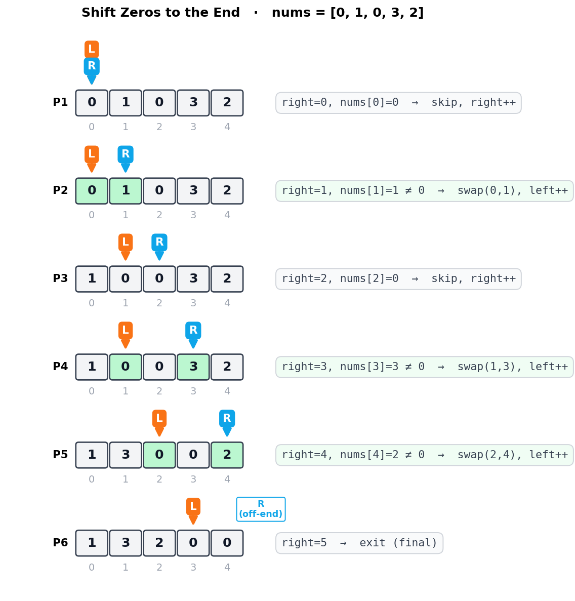
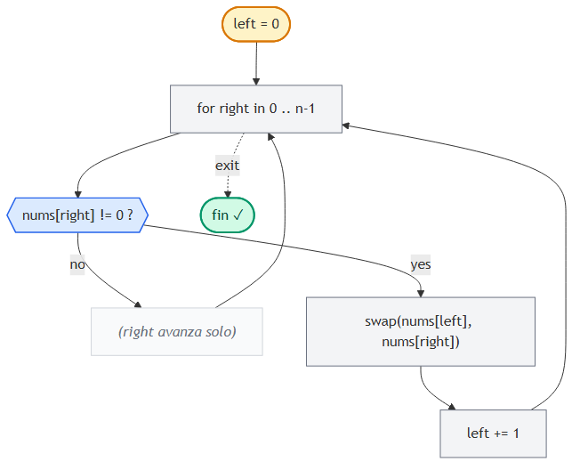

Shift Zeros to the End
📍 Two Pointers · Problema 5/6 · ⬅ Is Palindrome Valid · 🏠 Chapter · Next Lex Sequence ➡ · 📚 KB Index
TL;DR — Mover todos los ceros al final de un array, manteniendo el orden relativo de los no-ceros, in-place. Two pointers unidirectional:
leftmarca dónde escribir el próximo no-cero;rightrecorre buscando no-ceros para mover. Cada vez querightencuentra un no-cero, swap conlefty avanzá ambos. O(n) tiempo, O(1) espacio.
📑 In this entry¶
- 🎓 For Dummies — empezá por acá
- Problema
- Approach naive (que falla la consigna in-place)
- La idea: enfocate en los no-ceros
- Two pointers unidirectional
- Trace paso a paso
- Algorithm flowchart
- Implementación
- Por qué
left ≤ rightsiempre - Complexity Analysis
- Test Cases
- ⭐ Amplification: variantes y patrones relacionados
- ⚠️ Pitfalls
- Interview Tips
🎓 For Dummies — empezá por acá¶
Analogía: tenés una fila de bandejas con manzanas y vacíos (las manzanas son los no-ceros, los vacíos son los ceros). Querés que todas las manzanas queden a la izquierda sin cambiar el orden entre ellas, y que los vacíos queden a la derecha. Sin usar bandejas extras.
Antes: [ 0 🍎 0 🍎 🍎 ]
Después: [ 🍎 🍎 🍎 0 0 ]
Forma piola: dos personas empujan las manzanas:
- Persona LEFT se queda parada en la próxima posición que tiene que recibir una manzana.
- Persona RIGHT camina por toda la fila buscando manzanas.
- Cada vez que RIGHT encuentra una manzana, la cambia con lo que tenga LEFT en su posición (puede ser un vacío o la misma manzana).
- Después, LEFT da un paso adelante (porque ya tiene su manzana), y RIGHT sigue caminando.
Cuando RIGHT terminó de recorrer toda la fila, todas las manzanas quedaron contiguas a la izquierda (en el orden original) y los vacíos quedaron solos a la derecha. ¡Magia!
Truco mental clave: en vez de “mover los ceros al final” (difícil), mové los no-ceros al principio (fácil). Los ceros van quedando solos al final por descarte.
Trampas comunes¶
- ⚠️ Mover
leftcuando RIGHT cae en cero. No:leftsolo avanza cuando hubo swap (es decir, cuando RIGHT encontró un no-cero). Si RIGHT está en cero, RIGHT avanza solo. - ⚠️ Hacer swap con uno mismo cuando
left == right. No es bug funcional (el array no cambia), pero es trabajo perdido. La optimizaciónif right != leftlo evita. - ⚠️ Romper la consigna “in-place” creando un array nuevo. Si el enunciado pide modificar el input, no puedo allocar
tempy devolverlo — eso es trampa.
¿Listo para la versión completa? ⬇️
Problema¶
Dado un array de enteros, modificá el array in-place para mover todos los ceros al final, manteniendo el orden relativo de los elementos no-cero.
Ejemplo¶
Input: nums = [0, 1, 0, 3, 2]
Output: [1, 3, 2, 0, 0]
Constraints implícitas¶
- In-place: no podés devolver un array nuevo; tenés que mutar
nums. - Orden de los no-ceros: se preserva (
1, 3, 2en el ejemplo). - Orden de los ceros: irrelevante (todos son
0, son indistinguibles).
Approach naive (que falla la consigna in-place)¶
Crear un array auxiliar temp del mismo tamaño, copiar los no-ceros al frente, y rellenar el resto con ceros. Después, copiar temp de vuelta a nums:
function shiftZerosNaive(nums) {
const temp = new Array(nums.length).fill(0);
let i = 0;
for (const num of nums) {
if (num !== 0) {
temp[i] = num;
i++;
}
}
for (let j = 0; j < nums.length; j++) {
nums[j] = temp[j];
}
}
Tiempo: O(n). Espacio: O(n) ❌ (rompe la consigna in-place).
Pero la idea es buena: ignorar los ceros y solo mover los no-ceros al principio. Solo falta hacerlo sin allocar.
La idea: enfocate en los no-ceros¶
Reformulá el problema: en vez de “mover los ceros al final”, hacé “mover los no-ceros al principio en orden”. Si lo lográs, los ceros quedan al final automáticamente (eran lo único que sobraba).
Input: [ 0 1 0 3 2 ]
▲ ▲ ▲
└─────────┴────┴───── son los no-ceros, en orden
Output: [ 1 3 2 _ _ ] ← no-ceros movidos al principio
└────┴── posiciones que sobran → ceros
Si tuviera un cursor que indique “acá va el próximo no-cero”, y otro cursor que busque el próximo no-cero, podría escribirlo y avanzar el primer cursor. Eso es exactamente two pointers unidirectional.
Two pointers unidirectional¶
Convención:
left: posición donde se va a escribir el próximo no-cero. Empieza en0.right: cursor que recorre el array buscando no-ceros. Empieza en0y avanza siempre.
Lógica por iteración:
Si nums[right] == 0:
No hago nada — solo avanzo right.
Si nums[right] != 0:
Swap nums[left] con nums[right]. (mover el no-cero a la posición correcta)
left += 1. (la próxima posición de escritura es la siguiente)
Avanzo right.
right avanza siempre (sea cero o no), por eso lo escribimos como un for regular sobre todos los índices del array.
left solo avanza cuando hubo un swap.
Optimización menor¶
Si left == right cuando hay match (porque arrancó así o porque venimos pegados), el swap es una operación “no-op” (cambiar el elemento consigo mismo). Podés saltarte el swap con if right != left.
Trace paso a paso¶
Ejemplo: nums = [0, 1, 0, 3, 2].

Resultado: nums = [1, 3, 2, 0, 0] ✓
Observación clave: en cada iteración, todo lo que está a la izquierda de left es no-cero y en orden original. Todo lo que está entre left y right (inclusive) son ceros listos para ser sobreescritos. Esa es la invariante del algoritmo.
Algorithm flowchart¶

Implementación¶
JavaScript¶
function shiftZerosToTheEnd(nums) {
let left = 0;
for (let right = 0; right < nums.length; right++) {
if (nums[right] !== 0) {
// Optimización: skip swap si los punteros coinciden.
if (right !== left) {
[nums[left], nums[right]] = [nums[right], nums[left]];
}
left++;
}
}
}
C¶
public void ShiftZerosToTheEnd(int[] nums) {
int left = 0;
for (int right = 0; right < nums.Length; right++) {
if (nums[right] != 0) {
// Optimización: skip swap si los punteros coinciden.
if (right != left) {
(nums[left], nums[right]) = (nums[right], nums[left]);
}
left++;
}
}
}
Por qué left ≤ right siempre¶
Una invariante importante: en este algoritmo, left nunca supera a right.
leftempieza en 0 igual queright.leftsolo avanza después de querightya está en una posición válida.- En cada iteración del for-loop,
rightavanza al final, así que después de incrementarleftpor un swap,rightse incrementa también →left ≤ rightse mantiene.
Esto garantiza que nunca sobrescribís un valor que todavía no leíste. Por eso el swap es seguro y el algoritmo funciona en una sola pasada.
Complexity Analysis¶
| Métrica | Valor | Por qué |
|---|---|---|
| Tiempo | O(n) | El for-loop hace exactamente n iteraciones. Cada iteración es O(1) (comparación + swap opcional). |
| Espacio | O(1) | Solo left y la variable temporal del swap. No allocamos arrays nuevos. |
Comparación con alternativas¶
| Approach | Tiempo | Espacio | In-place? | Preserva orden? |
|---|---|---|---|---|
| Naive (array auxiliar) | O(n) | O(n) | ❌ | ✓ |
| Dos pasadas (escribir no-ceros, después rellenar ceros) | O(n) | O(1) | ✓ | ✓ |
| Two pointers (una pasada con swap) | O(n) | O(1) | ✓ | ✓ |
| Quicksort partitioning style | O(n) | O(1) | ✓ | ❌ (no garantiza orden) |
Two pointers gana porque hace una sola pasada y preserva el orden. La versión “dos pasadas” es válida también pero hace más trabajo.
Variante “una pasada sin swap” (escribir + rellenar)¶
function shiftZerosTwoPasses(nums) {
let write = 0;
// Pasada 1: copiar no-ceros al frente.
for (let read = 0; read < nums.length; read++) {
if (nums[read] !== 0) {
nums[write] = nums[read];
write++;
}
}
// Pasada 2: rellenar el resto con ceros.
for (let i = write; i < nums.length; i++) {
nums[i] = 0;
}
}
Misma complexity, pero hace ≤ 2n escrituras vs ≈ n escrituras del swap version. En la práctica son equivalentes.
Test Cases¶
| Input | Expected | Descripción |
|---|---|---|
[] |
[] |
Array vacío. |
[0] |
[0] |
Un solo cero. |
[1] |
[1] |
Un solo no-cero. |
[0, 0, 0] |
[0, 0, 0] |
Todos ceros. |
[1, 3, 2] |
[1, 3, 2] |
Sin ceros — sin cambios. |
[1, 1, 1, 0, 0] |
[1, 1, 1, 0, 0] |
Ceros ya al final. |
[0, 0, 1, 1, 1] |
[1, 1, 1, 0, 0] |
Ceros al principio. |
[0, 1, 0, 3, 2] |
[1, 3, 2, 0, 0] |
Caso del enunciado. |
[1, 0, 1, 0, 1] |
[1, 1, 1, 0, 0] |
Alternados. |
[4, 2, 4, 0, 0, 3, 0, 5, 1, 0] |
[4, 2, 4, 3, 5, 1, 0, 0, 0, 0] |
Mix grande. |
⭐ Amplification: variantes y patrones relacionados¶
Variante 1: Remove Element (LeetCode #27)¶
“Eliminar todas las apariciones de un valor específico in-place. Devolver la nueva longitud.”
Idéntico al patrón:
function removeElement(nums, val) {
let left = 0;
for (let right = 0; right < nums.length; right++) {
if (nums[right] !== val) {
nums[left] = nums[right];
left++;
}
}
return left; // nueva longitud
}
Diferencia con shift-zeros: acá no necesitás preservar los valores “removidos” al final, así que no hay swap — solo escribís nums[left] = nums[right] (overwrite).
Variante 2: Remove Duplicates from Sorted Array (LeetCode #26)¶
“Eliminar duplicados in-place de un array sorted. Devolver la nueva longitud.”
function removeDuplicates(nums) {
if (nums.length === 0) return 0;
let left = 1;
for (let right = 1; right < nums.length; right++) {
if (nums[right] !== nums[right - 1]) {
nums[left] = nums[right];
left++;
}
}
return left;
}
Mismo esqueleto: left apunta a dónde escribir, right recorre.
Variante 3: Sort Colors / Dutch Flag (LeetCode #75)¶
“Ordenar in-place un array que contiene solo 0, 1, 2 — sin usar sort.”
Necesita tres punteros (low, mid, high). Es una generalización de shift-zeros:
function sortColors(nums) {
let low = 0, mid = 0, high = nums.length - 1;
while (mid <= high) {
if (nums[mid] === 0) {
[nums[low], nums[mid]] = [nums[mid], nums[low]];
low++;
mid++;
} else if (nums[mid] === 1) {
mid++;
} else { // nums[mid] === 2
[nums[mid], nums[high]] = [nums[high], nums[mid]];
high--;
}
}
}
low separa los 0s de los 1s; high separa los 1s de los 2s; mid es el cursor de exploración. Patrón “Three-way partitioning”.
El meta-patrón: read pointer + write pointer¶
Todas estas variantes comparten la misma estructura:
- Un read pointer (
right) que siempre avanza, escaneando. - Un write pointer (
left) que avanza solo cuando se escribe un valor “válido”. - La condición para escribir cambia según el problema (no-cero, no-igual-al-anterior, no-igual-a-val).
Una vez que lo internalizás, una familia entera de problemas se resuelve igual.
Variante 4: Mover los CEROS al PRINCIPIO¶
(simétrico) — recorrés desde la derecha:
function shiftZerosToTheStart(nums) {
let right = nums.length - 1;
for (let left = nums.length - 1; left >= 0; left--) {
if (nums[left] !== 0) {
if (left !== right) {
[nums[left], nums[right]] = [nums[right], nums[left]];
}
right--;
}
}
}
Cambio: las direcciones de los punteros se invierten.
⚠️ Pitfalls¶
- Avanzar
leftsiempre, no solo en match. Sileft++cuando RIGHT está en cero, perdés la posición de escritura. - Olvidar el swap. Si solo hacés
nums[left] = nums[right](overwrite) sin swap, perdés el valor denums[left]— y para shift-zeros eso era un cero útil, lo necesitás conservar para que aparezca al final. - Asumir que el problema pide devolver el array. El enunciado dice “modify in place” — la firma típica devuelve
void(noint[]). - No considerar arrays sin ceros o solo ceros. El algoritmo los maneja bien sin código extra. No agregues casos especiales.
- Confundir con remove-element. En remove-element no importan los valores removidos (devolvés solo la nueva longitud). En shift-zeros sí necesitás que los ceros queden al final con el conteo correcto — por eso swap, no overwrite.
Interview Tips¶
Tip 1 — Reformulá el problema. Decí: “En vez de mover ceros al final, voy a mover no-ceros al principio. Es el mismo resultado, pero más fácil de razonar.” Mostrar que cambiás el ángulo del problema impresiona.
Tip 2 — Aclará los constraints.
- ¿Tengo que devolver algo? (típicamente no, porque es in-place).
- ¿Importa el orden de los ceros entre sí? (no, son indistinguibles).
- ¿Importa el orden relativo de los no-ceros? (sí, hay que preservarlo).
- ¿Puedo usar memoria extra? (no, in-place).
Tip 3 — Habla de la invariante.
Decí: “En cada iteración, todo a la izquierda de left son los no-ceros encontrados hasta ahora, en orden. Entre left y right hay solo ceros. right busca el siguiente no-cero.”
Tip 4 — Si el follow-up es “minimizá las escrituras”, tirá la versión sin swap. La versión “dos pasadas” hace ≤ 2n escrituras. La versión swap hace ≤ n swaps (cada swap = 2 escrituras), pero muchos pueden ser self-swaps. Ambas son O(n) pero pueden tener constants distintas. Mostrar que pensaste en eso suma.
Tip 5 — La complejidad es O(n) tiempo, O(1) espacio. Sabela en frío. Es la clase de problema que aparece en screen rounds.
References¶
- LeetCode — #283 Move Zeroes
- LeetCode — #27 Remove Element (variante)
- LeetCode — #26 Remove Duplicates from Sorted Array (variante)
- LeetCode — #75 Sort Colors (Dutch flag, tres punteros)
- Coding Interview Patterns — capítulo “Two Pointers” → “Shift Zeros to the End”
- Entradas relacionadas:
- Introduction to Two Pointers
📍 Two Pointers · Problema 5/6 · ⬅ Is Palindrome Valid · 🏠 Chapter · Next Lex Sequence ➡ · 📚 KB Index